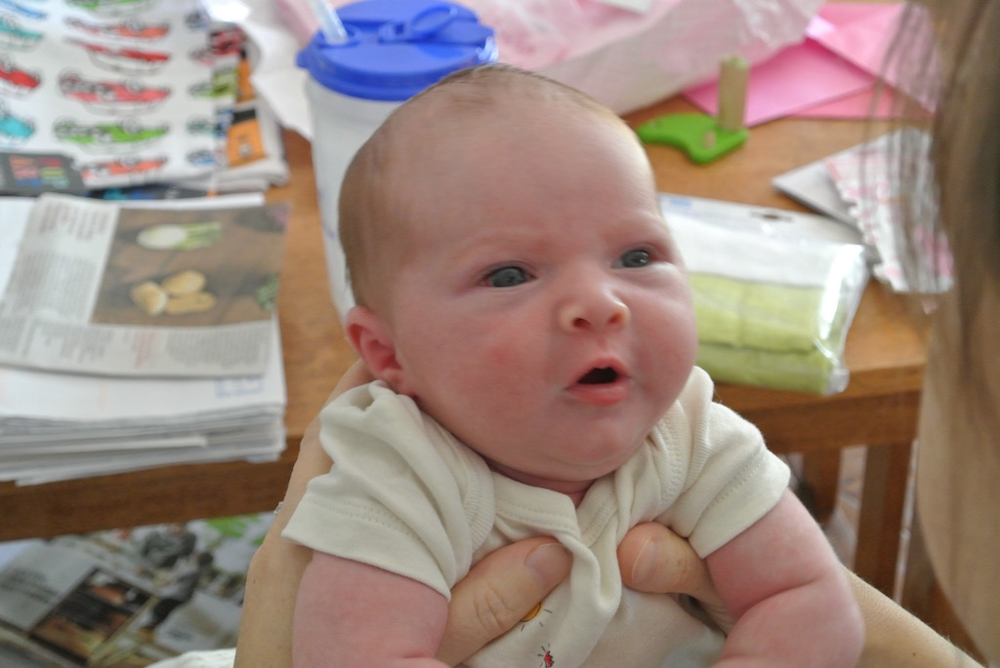
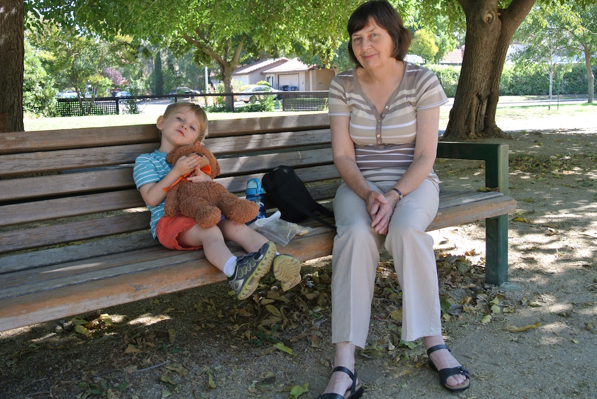
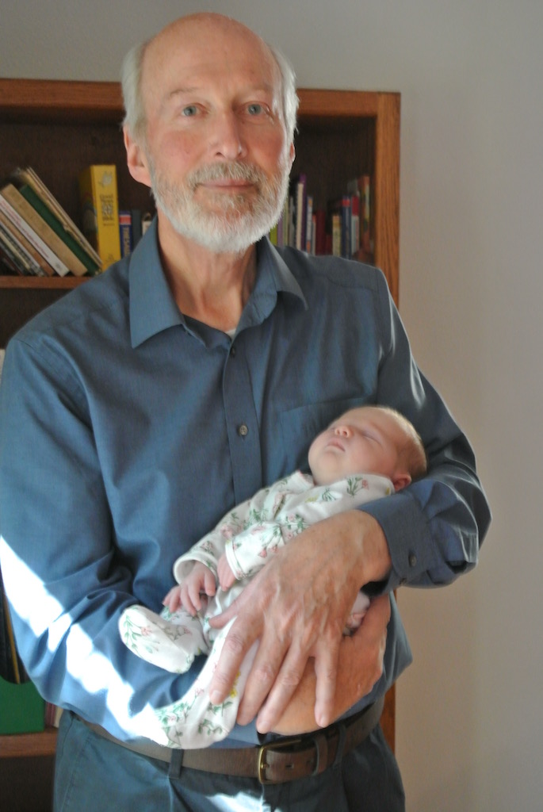
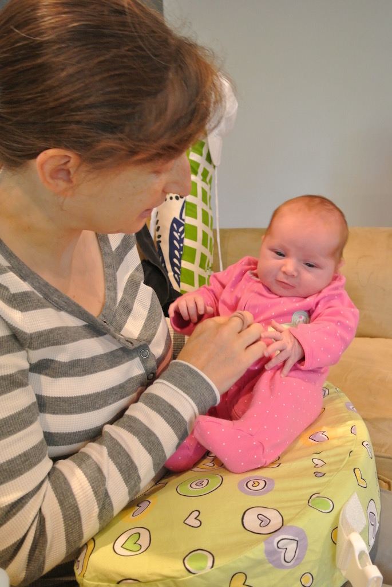
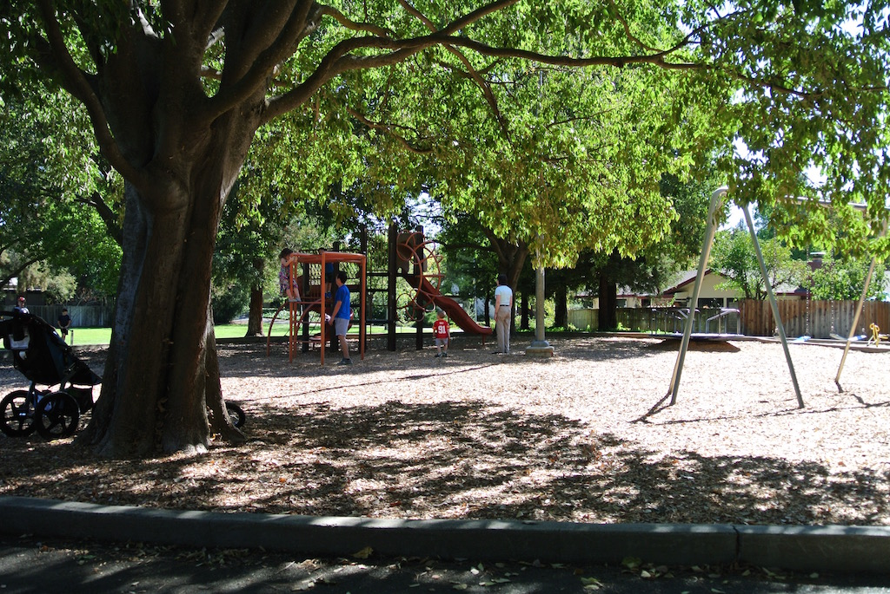
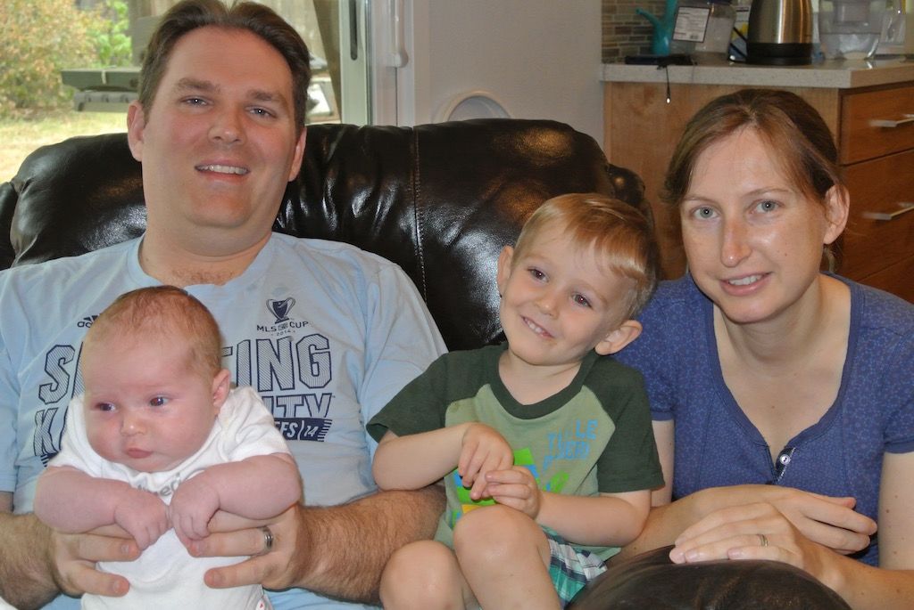

Thursday 1st October
Sam started her holiday at 9am this morning when we took her to the cattery! Then we had a sit down while waiting for the taxi (which arrived at ten), although I only just remembered the BART cards and the Avis card. There was some congestion on the M25 and the driver did not handle it very well. However, we got to Heathrow at 11:30, checked our bags, got through security and had plenty of time for half a sandwich and a coffee before our flight. The flight was scheduled for 14:00, but it was 13:50 before we started boarding and, since the plane was an A380, there were lots of passengers. We took off at about 14:45. We had seats on an emergency exit row and so had plenty of leg room. However, there was no window! They gave us a hot meal, a snack and then another hot meal, which was really too much. I watched two films (45 Years and Kingsman) and Angela watched one. We arrived at about 5 o'clock local time. Passport control at San Fransico was very quick, although we had quite a wait for our cases and then another long wait for the right shuttle bus to the hotel. We got to the hotel just before seven and sent a message to Brandon.
Friday 2nd October
After. a poor night's sleep we were up at six, showered, had breakfast and caught the 8:15 shuttle bus to the airport to catch the BART into San Francisco. We changed trains at Powell and then caught the Amtrack train at Richmond, arriving in Davis just after twelve. Brandon was there to meet us. By this time, Juniper was one week and one day old! We then spent the rest of the afternoon talking with V & B, before B collected Austin from pre-school. After dinner we went for a walk to the park.
Saturday 3rd October
We all had a bit of a lie in this morning. It was ten o'clock before we had finished breakfast and showered and were ready to do something. We started by taking Austin for a walk, except that he rode in his buggy. We tried to find a playground, but got a bit lost. We had a snack by a playground and then walked back. After lunch we spent a lot of the afternoon either playing with Austin or doing a jigsaw puzzle. After dinner we took Austin back to the playground (that we had passed in the morning), but this time he took his bike.
Sunday 4th October
A quiet day. We spoke to Paul mid morning, but otherwise just held Juniper, played with Austin and finished the jigsaw puzzle. After dinner we went for a walk to a playground with Austin. We then gave him a bath, but he would not get dressed for bed!
Monday 5th October
We had another lazy day. We had intended walking Austin to school, but ran out of time. So Victoria drove and I went with them. We then sat around for the rest of the day, holding Juniper and talking, until it was time to collect Austin. Then we all walked to his pre-school to collect him (including Juniper), with his balance bike. He rode the bike all the way home. After dinner, Brandon and I went to a meeting of the local 'maker space'. It was quite interesting, finding out what they do.
Tuesday 6th October
We have walked to Austin's pre-school twice today (and back). This morning he rode his bike the and we saw a RouteMaster bus on the way back. This evening we forgot to take the lock key and so had to leave his bike and so he walked all the way home. This afternoon I spent a lot of the time looking at the Tiger Moth plans and making notes about motor, ESC and servo placement.
Wednesday 7th October
Today Juniper was two weeks old! So I took some photos. This was after we had both showered and walked Austin to pre-school. We had left his bike there yesterday, so Brandon pushed him in his three-wheeled buggy. Brandon and I went to firstly the Target supermarket and then to Nugget, to get some nappies and some food. After lunch Angela and I lined some kitchen cupboard shelves before we all walked to pick up Austin. He was able to ride his bike home, since we had the lock key with us this time.
Thursday 8th October
We had a very tiring day today. It started with a walk to Austin's pre-school. Austin rode his bike, but while Victoria and Brandon came home, we walked on into Davis. We found that most shops didn't open until ten, so we went into the Whole Foods supermarket to have coffee and look at the map and bus timetable that we had picked up at the tourist information centre. We then bought two postcards, one for Rowan and one for Bay. Angela wrote them and we found the post office. But it did not open until midday! However, it did say that the main post office was open. So we walked a long way along 5th Street to the post office and bought stamps (round ones). It was nearly midday by this time and getting quite hot, so we caught the Perimeter bus around to F Street and then walked through the park. We got back just before one. After a late lunch we sat outside reading. I also finished writing a short item for the WSMGOC Main Gear booklet before it was time to collect Austin. After that walk we were very tired. After dinner I e-mailed the item to Roger Drake. We then had a fight to get Austin bathed and into bed!
Friday 9th October
A less energetic day today. We did walk to Austin's pre-school this morning, but then we sat around until lunch-time, when we drove to a BBQ restaurant in Woodland. From there we went to Target and to Costco, both on the outskirts of Woodland. When we got home there was more sitting around until it was time to collect Austin. However, it was still very hot, so Brandon went to collect him. After tea we tried out a couple of WII games with Austin.
Saturday 10th October
Another lazy, but exhausting day. We didn't get up until 8:15 and it was nearly 10 o'clock before we had finished breakfast. Brandon had started a new jigsaw puzzle and I spent a lot of the day helping to do it. I did spend a short amount of time helping Brandon sort out a new remote controlled light switch for their ensuite bathroom. We also spent quite some time persuading Austin to eat his dinner. But then I gave him a bath. That really tired me out.
Sunday 11th October
 We were up late for pancakes again. Then we finished the jigsaw puzzle before taking Austin to the nearest playground (that has the climbing frame and slides in the shade), getting back in time to make lunch. Meanwhile, Brandon was watching the Kansas City Chiefs lose! This afternoon we simply played with Austin. Again he was reluctant to eat his dinner, but the chance to go round to a neighbourhood party prompted him to eat enough. They then spent an hour chatting with neighbours while we had coffee and cleared up.
We were up late for pancakes again. Then we finished the jigsaw puzzle before taking Austin to the nearest playground (that has the climbing frame and slides in the shade), getting back in time to make lunch. Meanwhile, Brandon was watching the Kansas City Chiefs lose! This afternoon we simply played with Austin. Again he was reluctant to eat his dinner, but the chance to go round to a neighbourhood party prompted him to eat enough. They then spent an hour chatting with neighbours while we had coffee and cleared up.
Monday 12th October
This morning we took Austin to school and then walked into Davis. In spite of getting up at 6:30, it was still 9 o'clock before we got to his school. Victoria brought Juniper home while we walked on. Most shops don't open until ten, so we had a cup of coffee before going to the charity book shop. There we bought four paperbacks before looking around some of the other shops. I decided to walk to a bus route that would take us back to Cataline Drive, but it was further than I thought and we missed the bus! So we walked all the way back! After lunch I set up the MacBook Air (while Angela swept up some leaves). Victoria collected Austin in the car, since it was quite warm today, and barbecued some chicken, that we had on a bowl of salad.
Tuesday 13th October
We were earlier this morning and got Austin to school just after 8:30, although he wanted to be pushed in his new wheels. When we got back we moved the piles of leaves into the road, ready for collection tomorrow. I also cleared out the front gutters. We had intended going to the supermarket after lunch, but Juniper kept sleeping and by the time that she woke it was too late. So I did some more experimentation with my Trips web page on the MacBook Air. Victoria collected Austin from school in the car, since it was still hot. He was not in a very good mood. After dinner he improved and while Victoria gave Juniper her first bath (in the sink) I gave Austin a bath. We then took some photos of the two of them on the sofa.
Wednesday 14th October
We were quite early this morning, in spite of showering and Austin's late bed-time. However, as we left, Juniper started crying. So Victoria came back and we took Austin to pre-school. He was surprisingly easy to leave there. We then went to Target, where I bought a hat and we stopped for coffee, and then to Nugget to get some food, getting home just in time for lunch. This afternoon Angela hung out washing and did some cooking, while I sat down! After dinner Austin went round to their next-door neighbours to play for a while.
Thursday 15th October
Today was a successful day until this evening, when Austin wanted to stop at the ABC playground on the way home from school and then would not ride his bike the rest of the way and later would not eat his dinner. We had dropped him off this morning with his BeeBike, so as to take part in the Trikeathon, and then walked on into Davis. We bought our train tickets for Saturday and a loaf of bread, had coffee in a 'connoisseur's' coffee shop, took books to the charity shop, bought some things in Ace and eventually used our P.O. card in an ATM to get most of the cash out, before we walked back. After lunch Angela did some cleaning and I vacuumed throughout. She then prepared a casserole before we went to collect Austin; then the trouble started.
Friday 16th October
Today was our last day in Davis. We walked Austin to school, had a Skype call with Alan and Dad and then went into Davis for a long lunch with Victoria and Brandon. Finally we collected Austin from school before having a light tea. Now just need to pack!
Saturday 17th/Sunday 18th October
These two days merged into one as we caught the train from Davis at 09:30 (Pacific Time) on Saturday and arrived home by taxi at 15:20 (BST) on Sunday.Brandon and Austin took us to the station and waved goodbye. The Amtrack Capital Corridor took us to Richmond, where we caught the BART, firstly to Powell and then to SFO. It all worked too smoothly (including airport security) and so we had over two hours to wait before our American Airlines flight to Pheonix. Then we had just over an hour to wait for our BA flight left for the overnight trip to Heathrow. And the taxi was waiting. When we got home and had 'turned on' the house we called Dad and Bay and messaged Victoria before FaceTiming Paul. Then an early night.